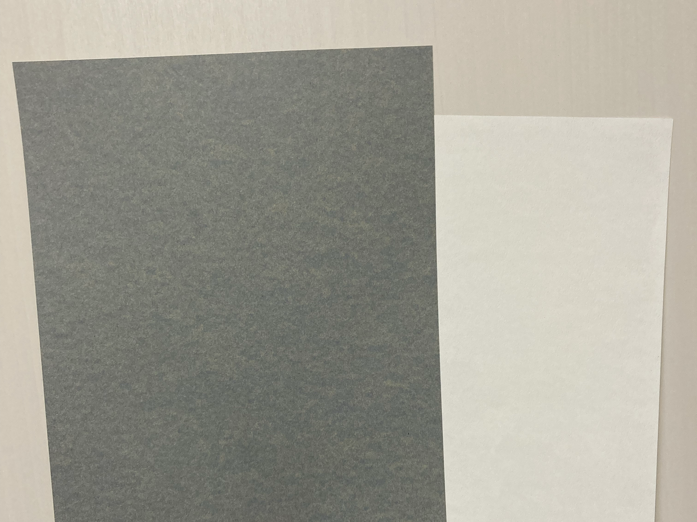

試作について
この試作のパターングラフィックスについてですが、実際には二段階目の試作品となります。
一段階目の試作品は、現在の試作品と大まかな形状は変化してはいませんが、色彩においては全く異なるものでした。
色数もそこまでなく、シンプルなものでした。
しかし、制作を重ねていくうちに音から得られる視覚情報というのは、もっと色鮮やかなものだということに行きつきました。
よって、現在の試作品のように色鮮やかなデザインに仕上がりました。